|
Plague Dogs
THE BOSTON GLOBE A lyrical, engrossing tale, by the author of WATERSHIP DOWN, Richard Adams creates a lyrical and engrossing tale, a remarkable journey into the hearts and minds of two canine heroes, Snitter and Rowf, fugitives from the horrors of an animal research center who escape into the isolation—and terror—of the wilderness. All The President's Men
Let Them Eat Data: How Computers Affect Education, Cultural Diversity, and the Prospects of Ecological Sustainability
Contrary to the attitudes that have been marketed and taught to us, says C. A. Bowers, the fact is that computers operate on a set of Western cultural assumptions and a market economy that drives consumption. Our indoctrination includes the view of global computing innovations as inevitable and on a par with social progress—a perspective dismayingly suggestive of the mindset that engendered the vast cultural and ecological disruptions of the industrial revolution and world colonialism. In Let Them Eat Data Bowers discusses important issues that have fallen into the gap between our perceptions and the realities of global computing, including the misuse of the theory of evolution to justify and legitimate the global spread of computers, and the ecological and cultural implications of unmoving knowledge from its local contexts as it is digitized, commodified, and packaged for global consumption. He also suggests ways that educators can help us think more critically about technology. Let Them Eat Data is essential reading if we are to begin democratizing technological decisions, conserving true cultural diversity and intergenerational forms of knowledge, and living within the limits and possibilities of the earth's natural systems. Map Making :The Art That Became a Science
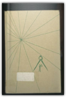
Lloyd A. Brown
About Cartography and the roots of mapmaking
Nibbled to Death by Ducks
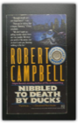
Robert Campbell
In a Pig's Eye
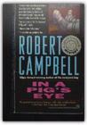
Robert Campbell
The Edgar Award-winning author of Junkyard Dog is back with a new mystery featuring Chicago's most endearing sewer inspector, Jimmy Flannery. When a high-and-mighty police chief asks him to help investigate the mysterious death of a man who remains unidentified at the morgue, Jimmy runs up against some Chicago big boys—and an underworld warlord.
A Primer of Chess
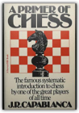
Jose R. Capablanca
A basic manual of chess by the master José Raul Capablanca, regarded as one of the half dozen greatest players ever. Capablanca was noted especially for his technical mastery, and in this book he explains the fundamentals as no one else could. Diagrams.
Perfect Square: Dali
Fade Away
In novels that crackle with wit and suspense, Edgar Award winner Harlan Coben has created one of the most fascinating and complex heroes in suspense fiction—Myron Bolitar—a hotheaded, tenderhearted sports agent who grows more and more engaging and unpredictable with each page-turning appearance. One False Move
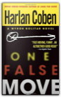
Harlan Coben
She's smart, beautiful, and she doesn't need a man to look after her. But sports agent Myron Bolitar has come into her life—big time. Now Myron's next move may be his last—Brenda Slaughter is no damsel in distress. Myron Bolitar is no bodyguard. But Myron has agreed to protect the bright, strong, beautiful basketball star. And he's about to find out if he's man enough to unravel the tragic riddle of her life. Twenty years before, Brenda's mother deserted her. And just as Brenda is making it to the top of the women's pro basketball world, her father disappears too. A big-time New York sports agent with a foundering love life, Myron has a professional interest in Brenda. Then a personal one. But between them isn't just the difference in their backgrounds or the color of their skin. Between them is a chasm of corruption and lies, a vicious young mafioso on the make, and one secret that some people are dying to keep—and others are killing to protect.... The Final Detail
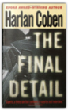
Harlan Coben
His heart is broken. His partner is in jail. And someone is trying to kill him.Then Myron Bolitar gets some really bad news.... For sports agent Myron Bolitar, it seemed like the perfect vacation. A tropical beach. A warm breeze. A little uncomplicated passion with a woman he barely knows. Myron is almost in heaven when his friend Win shows up with a message that blasts him back to reality: Esperanza is in trouble. It's time to come home. Now Myron is back in New York, determined to help Esperanza, his best friend and partner, who's been accused of killing one of their clients. But Esperanza isn't talking. Neither is her lawyer. And to prove his friend's innocence, Myron must trace the rise and fall of the victim, a pitcher who had been making a comeback with the Yankees. Suddenly the investigation is leading Myron to places he'd rather not go: into a family's agony, through the city's sexual underground, and to a moment buried on the dark side of a brilliant sports career.... Twelve years ago a young agent named Bolitar tried to help an up-and-coming athlete. It was a fatal mistake—and now Myron will have to pay the price.... Gone for Good
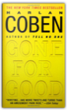
Harlan Coben
As a boy, Will Klein had a hero: his older brother, Ken. Then, on a warm suburban night in the Kleins’ affluent New Jersey neighborhood, a young woman—a girl Will had once loved—was found brutally murdered in her family’s basement. The prime suspect: Ken Klein. With the evidence against him overwhelming, Ken simply vanished. And when his shattered family never heard from Ken again, they were sure he was gone for good.Now eleven years have passed. Will has found proof that Ken is alive. And this is just the first in a series of stunning revelations as Will is forced to confront startling truths about his brother, and even himself. As a violent mystery unwinds around him, Will knows he must press his search all the way to the end. Because the most powerful surprises are yet to come. The Andromeda Strain
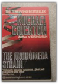
Michael Crichton
Lost on a Mountain in Maine
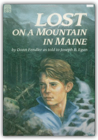
Donn Fendler
When twelve-year-old Donn Fendler gets tired of waiting for his father and brothers to join him on the summit of Maine's highest peak, he decides to find his own way back to camp. But Donn doesn't count on a fast-moving fog that obscures the path. He doesn't count on falling down an embankment that hides him from sight. And he doesn't count on taking a turn that leaves him alone to wander aimlessly for nearly two weeks in the empty mountain wilderness.
Crusade Against Slavery, 1830-1860
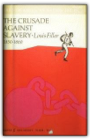
Louis Filler
Perhaps no other crusade in the history of the U.S. provoked so much passion and fury as the struggle over slavery. Many of the problems that were a part of that great debate are still with us. Louis Filler has brought together much information both known and new on those who organized to defeat slavery. He has also re-examined the anti-slavery movement’s ideals, heroes, and martyrs with historical perspective and precision.Contrary to popular belief, the anti-slavery movement was far from united. It included abolitionists as well as a variety of reformers whose activities place them among the anti-slavery forces. These included men as different in background and temperament as William Lloyd Garrison and John Quincy Adams. Portraits of the many protagonists, their hardships, and their quarrels with Southerners and Northerners alike, bring to life this exciting and tumultuous period. Filler also examines the many related reform movements that characterized the period: feminism, spiritualism, utopian societies, and educational reform. The volume traces the relationship of the antislavery movement to abolition and probes their connection with the several reforms that dominated the period. He brilliantly recaptures a sense of the contemporary consequences of the reformers efforts. This is an absorbing and important survey of the problems—political, social, and economic—that made this period so crucial in the history of the U.S. Johnny Tremain
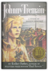
Esther Hoskins Forbes
The great events of Revolutionary Boston as seen through the shrewd eyes of an observant fourteen-year-old boy.
Reflex
NEWSWEEK Dick Francis is no ordinary mystery writer, and jockey Philip Nore is no ordinary hero. When Nore begins to suspect that a track photographer's fatal accident was really murder, he sets out to discover the truth and to trap the killer. Slowly, he unravels some nasty secrets of corruption, blackmail and murder—and unwittingly sets himself up as the killer's next target. "A burst with action." THE LOST ANGELES TIMES Decider
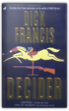
Dick Francis
Architect Lee Morris inherits partial ownership of the Stratton Park racecourse and finds himself embroiled in a deadly battle among its wealthy owners, members of his own estranged family. Reprint. K. NYT. PW.
My Side of the Mountain
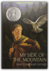
Jean Craighead George
In this enthralling story, a boy builds a treehouse in the mountains and learns to live entirely by his wits. "(Emphasizes) the rewards of courage and determination."—The Horn Book.
The Balkans: Nationalism, War & the Great Powers, 1804-1999
The Chess Garden: Or the Twilight Letters of Gustav Uyterhoeven
An Unfortunate Prairie Occurrence
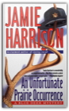
Jamie Harrison
Big Sky, Old Bones, and Murderous Obsession. Blue Deer, Montana Has it All...A Cleveland hunter has just shot off his best friend's hand and the first blizzard fo the season was blowing into Blue Deer, Montana, when a camper found an old skeleton on Magpie Island. Sheriff Jules Clement, one-time archeologist, now his hometown's cop, relishes the chance to identify the remains. In a small-town job riddled with gas station robberies and domestic abuse, the bones offer a chance to use his skills..a diversion from a dying love affair..and a break from hunting a rapist who continues to strike. But old bones bring new troubles—the kind that have Jules questioning his own friends and family, stripping away his last illusions about justice...and the kind that can get a lawman killed in a Montana minute. A Brief History of Time: From the Big Bang to Black Holes
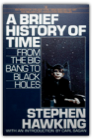
Stephen Hawking
Stephen Hawking has earned a reputation as the most brilliant theoretical physicist since Einstein. In this landmark volume, Professor Hawking shares his blazing intellect with nonscientists everywhere, guiding us expertly to confront the supreme questions of the nature of time and the universe. Was there a beginning of time? Will there be an end? Is the universe infinite or does it have boundaries? From Galileo and Newton to modern astrophysics, from the breathtakingly cast to the extraordinarily tiny, Professor Hawking leads us on an exhilarating journey to distant galaxies, black holes, alternate dimensions—as close as man has ever ventured to the mind of God. From the vantage point of the wheelchair from which he has spent more than twenty years trapped by Lou Gehrig's disease, Stephen Hawking has transformed our view of the universe. Cogently explained, passionately revealed, A Brief History of Time is the story of the ultimate quest for knowledge: the ongoing search for the tantalizing secrets at the heart of time and space.
The Target is Destroyed
The Wailing Wind
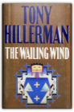
Tony Hillerman
To Officer Bernadette Manuelito, the man curled up on the truck seat was just another drunk — which got Bernie in trouble for mishandling a crime scene — which got Sergeant Jim Chee in trouble with the FBI — which drew Lieutenant Joe Leaphorn out of retirement and back into the old "Golden Calf" homicide, a case he had hoped to forget.Nothing had seemed complicated about that earlier one. A con game had gone sour. A swindler had tried to sell wealthy old Wiley Denton the location of one of the West's multitude of legendary lost gold mines. Denton had shot the swindler, called the police, confessed the homicide, and done his short prison time. No mystery there. Except why did the rich man's bride vanish? The cynics said she was part of the swindle plot. She'd fled when it failed. But, alas, old Joe Leaphorn was a romantic. He believed in love, and thus the Golden Calf case still troubled him. Now, papers found in this new homicide case connect the victim to Denton and to the mythical Golden Calf Mine. The first Golden Calf victim had been there just hours before Denton killed him. And while Denton was killing him, four children trespassing among the rows of empty bunkers in the long-abandoned Wingate Ordnance Depot called in an odd report to the police. They had heard, in the wind wailing around the old buildings, what sounded like music and the cries of a woman. Bernie Manuelito uses her knowledge of Navajo country, its tribal traditions, and her friendship with a famous old medicine man to unravel the first knot of this puzzle, with Jim Chee putting aside his distaste of the FBI to help her. But the questions raised by this second Golden Calf murder aren't answered until Leaphorn solves the puzzle left by the first one and discovers what the young trespassers heard in the wailing wind. Paddle-to-the-Sea
DESTROYERS; FOXES OF THE SEA, BY EDWIN P. HOYT.
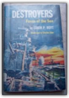
Edwin Palmer Hoyt
Parliamentary Procedure at a Glance: New Edition
A Small Place
A Separate Peace
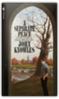
John Knowles
Gene was a lonely, introverted intellectual. Phineas was a handsome, taunting, daredevil athlete. What happened between them at school one summer during the early years of World War II is the subject of A Separate Peace. A great bestseller for over thirty years—one of the most starkly moving parables ever written of the dark forces that brood over the tortured world of adolescence.
The Physics of Star Trek
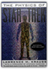
Lawrence M. Krauss
What warps when you're traveling at warp speed?What's the difference between a holodeck and a hologram? What happens when you get beamed up? What's the difference between a wormhole and a black hole? What is antimatter, and why does the Enterprise need it? Are time loops really possible, and can I kill my grandmother before I am born? Discover the answers to these and many other fascinating questions from a renowned physicist and dedicated Trekker. Featuring a section on the top ten physics bloopers and blunders in Star Trek as selected by Nobel-Prize winning physicists and other devout Trekkers! "Today's science fiction is often tomorrow's science fact. The physics that underlines Star Trek is surely worth investigating. To confine our attention to terrestrial matters would be to limit the human spirit." —From the foreword by Stephen Hawking NATIONAL BESTSELLER! This book was not prepared, approved, licensed, or endorsed by any entity involved in creating or producing the Star Trek television series or films. Common Sense in Chess
The Brothers Lionheart
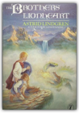
Astrid Lindgren
Two brothers share many adventures after their death when they are reunited in Nangiyala, the land where sagas come from.
White Fang
The Color of Water: A Black Man's Tribute to His White Mother
Looking for a Ship
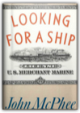
John McPhee
This is an extraordinary tale of life on the high seas aboard one of the last American merchant ships, the S.S. Stella Lykes, on a forty-two-day journey from Charleston down the Pacific coast of South America. As the crew of the Stella Lykes makes their ocean voyage, they tell stories of other runs and other ships, tales of disaster, stupidity, greed, generosity, and courage.
My System
Clabbered Dirt, Sweet Grass
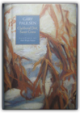
Gary Paulsen; Ruth Wright Paulsen
A lyrical tribute to farm life consists of poetic vignettes that describe everything from the knifing of a pig, to the pride of threshing perfect wheat, to gargantuan meals and first love. 30,000 first printing. Tour.
FIFTY-EIGHT (58) LONELY MEN, Southern Federal Judges and School Desegregation
The Summer of the Danes: The Eighteenth Chronicle of Brother Cadfael
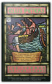
Ellis Peters
To tie in with the hardcover release of Peters' The Benediction of Brother Cadfael, here is the 18th entry in the eminently successful medieval detective series. In the summer of 1144, Brother Cadfael is sent to Wales on church business and is captured by Danes. And when a prisoner is murderer, the clever monk knows he'll not see Shrewsbury again until the killer is caught.
The Soul of a Patriot
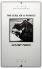
Evgeny Popov
Set in Moscow between the 1982 celebrations for the October Revolution, and the death and funeral of Brezhnev, this epistolary novel, through the narrator's reported attempts to visit various friends on the day of the funeral, creates a rumbustious social history of Russia since the Revolutionm.
All Quiet on the Western Front
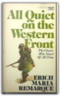
Erich Maria Remarque
Portnoy's Complaint
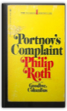
Philip Roth
Shows some signs of wear, and may have some markings on the inside. 100% Money Back Guarantee.
Blitzkreig;: The long armistice to the fall of France
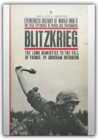
Abraham Rothberg
Victory: Eyewitness History of World War II
The Dragons of Eden: Speculations on the Evolution of Human Intelligence
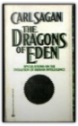
Carl Sagan
Small is Beautiful: Economics as if People Mattered
Small is Beautiful looks at the economic structure of the Western world in a revolutionary way. Schumacher maintains that Man's current pursuit of profit and progress, which promotes giant organisations and increased specialisation, has in fact resulted in gross economic inefficiency, environmental pollution and inhumane working conditions. Schumacher challenges the doctrine of economic, technological and scientific specialisation and proposes a system of Intermediate Technology, based on smaller working units, communal ownership and regional workplaces utilising local labour and resources. Why People Believe Weird Things: Pseudoscience, Superstition, and Other Confusions of Our Time
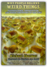
Michael Shermer
This work presents a down-to-earth and sometimes funny survey of a range of contemporary irrationalisms, and explains their empirical and logical flaws. It tackles a variety of topics including creationism, Holocaust denial, race and IQ, cults and alien abductions, and the author looks at the research behind the claims and discredits the pseudoscience involved.
The Gulag Archipelago 1918-1956: An Experiment in Literary Investigation, Parts I-II
"The Good War": An Oral History of World War II
OVER FIVE MONTHS ON THE NEW YORK TIMES BESTSELLER LIST Coming of Age: The Story of Our Century by Those Who'Ve Lived It
Calvin and Hobbes
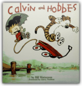
Bill Watterson
Online:gocomics.com/calvinandhobbes/ Yukon Ho!
Calvin and Hobbes' Lazy Sunday Book: A Collection of Sunday Calvin and Hobbes Cartoons
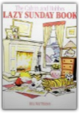
BILL WATTERSON
Weirdos from Another Planet!
In Calvin and Hobbes book Weirdos From Another Planet!, this power-packed extravaganza of creative energy and imagination feature the childhood fun and fantasy that was a Watterson trademark. Weirdos From Another Planet!, is out of this world! Scientific Progress Goes Boink
Attack of the Deranged Mutant Killer Monster Snow Goons
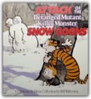
Bill Watterson
Online:gocomics.com/calvinandhobbes/ The Days are Just Packed: A Calvin and Hobbes Collection
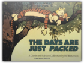
Bill Watterson
Zounds! Spaceman Spiff, Stupendous Man, the ferocious tiger Hobbes, and the rest of Calvin's riotous imagination are all included in The Days Are Just Packed. Calvin, the irrepressible pint-sized tyrant, is always bursting with energy. And the volume's oversized 12-by-9 inch format provides Calvin's outrageous fantasies room to explode. Dozens of Sunday strips are lavishly reproduced in color for The Days Are Just Packed, along with Calvin's amusing weekday adventures.
Homicidal Psycho Jungle Cat
The Calvin and Hobbes Tenth Anniversary Book
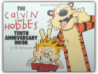
Bill Watterson
"Watterson re-created the thoughts and feelings of a six-year-old with uncanny accuracy ... Calvin and Hobbes was, simply, the best comic strip." —Charles Solomon, Los Angeles TimesMany moons ago, the magic of Calvin and Hobbes first appeared on the funny pages and the world was introduced to a wondrous pair of friends — a boy and his tiger, who brought new life to the comics page. To celebrate the tenth anniversary of this distinguished partnership, Bill Watterson prepared this special book, sharing his thoughts on cartooning and creating Calvin and Hobbes, illustrated throughout with favorite black-and-white and color cartoons. There's Treasure Everywhere—A Calvin and Hobbes Collection
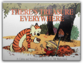
Bill Watterson
In the world that Calvin and his tiger Hobbes share, treasures can be found in the most unlikely places, from the outer regions where Spaceman spiff travels to the rocks in the backyard—this curious duo roams their world in search of fortunes (and misfortunes!) to be experienced. Whether Calvin and Hobbes are blasting off on another interplanetary adventure or approaching warp speed on a downhill wagon ride, their capers are repartee consistently charm and refresh their readers' days. On his own, Calvin is prey to the insidious killer bicycle, is the arbiter of the dad poll, is the creator of a legion of snowmen who provide an incisive social commentary, and Hobbes is always there as the perfect companion. Watterson's talent is evidenced by the range of thought provoking emotions the strip encompasses in addition to the laughs it induces: the loyalty and friendship between Calvin and Hobbes, the challenge of being a patient parents, and the sardonic viewpoint of a cynical six-year-old ("I'm a 21st-century kid trapped in a 19th-century family," laments Calvin) combine to make this one of the best-loved strips in cartoon history.
Calvin and Hobbes: Sunday Pages 1985-1995
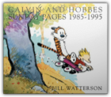
Bill Watterson
New York Times best-seller!Everyone misses Calvin and Hobbes. It reinvented the newspaper comic strip at a time when many had all but buried the funnies as a vehicle for fresh, creative work. Then Bill Watterson came along and reminded a new generation of what older readers and comic strip aficionados knew: A well-written and beautifully drawn strip is an intricate, powerful form of communication. And with Calvin and Hobbes, we had fun—just like readers of Krazy Kat and Pogo did. Opening the newspaper each day was an adventure. The heights of Watterson's creative imagination took us places we had never been. We miss that. This book was published in conjunction with the first exhibition of original Calvin and Hobbes Sunday pages at The Ohio State University Cartoon Research Library. Although the work was created for reproduction, not for gallery display, was a pleasure to see the cartoonist's carefully placed lines and exquisite brush strokes. In an attempt to share this experience with those who were unable to visit the exhibition, all of the original Sunday pages displayed are reproduced in color in this book so that every detail, such as sketch lines, corrections, and registration marks, are visible. On the opposite page the same comic strip is printed in full color. Because Watterson was unusually intentional and creative in his use of color, this juxtaposition provides Calvin and Hobbes readers the opportunity to consider the impact of color on its narrative and content. When I first contacted Bill Watterson about the possibility of exhibiting his original work, I used the term "retrospective." He replied that we might be able to do an exhibit, but that calling it a retrospective made him uncomfortable. He felt that a longer time was needed to put Calvin and Hobbes in the historical perspective implied by that term. Nonetheless, this show is a "look back" at the comic strip as we revisit favorites that we remember. Calvin and Hobbes: Sunday Pages 1985-1995 is particularly interesting because each work that is included was selected by Bill Watterson. His comments about the thirty-six Sunday pages he chose are part of this volume. In addition, he reflects on Calvin and Hobbes from the perspective of six years, and his essay provides insights into his life as a syndicated cartoonist. Reprint books of Calvin and Hobbes are nice to have, but the opportunity to see the original work and read Bill Watterson's thoughts about it is a privilege. He generously shared not only the art, but also his time and his thoughts. When I first reviewed the works included in the exhibit, I knew that everyone who visited it would begin with laughter and end with tears. On behalf of all who enjoyed Calvin and Hobbes, thank you, Bill Watterson. —Lucy Shelton Caswell, Professor and Curator The Ohio State University Cartoon Research Library, June 2001 The Battle of Midway

Maine Massacre

Hugh Pine and the Good Place
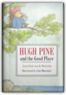
Janwillem Van De Wetering
Hugh Pine, a porcupine, decides to live alone on an island in order to get away from all the problems the forest animals bring to him; but after a time he decides being alone isn't so wonderful after all.
The Wisest Man in America
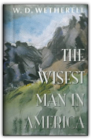
W.D. Wetherell
Loss, redemption, and the New Hampshire primary tie two men as they search for what's lasting in a world of change.
Пятое время года
|


My Library
Collection Total:
1320 Items
1320 Items
Last Updated:
Apr 14, 2013
Apr 14, 2013
 Made with Delicious Library
Made with Delicious Library